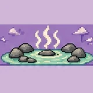
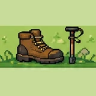
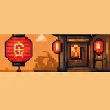
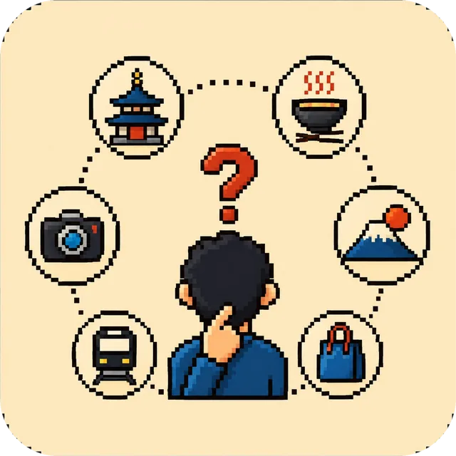
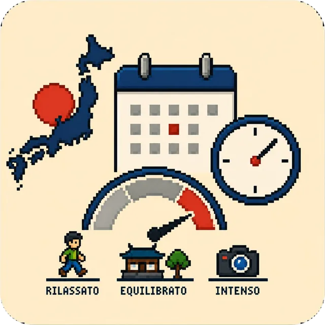
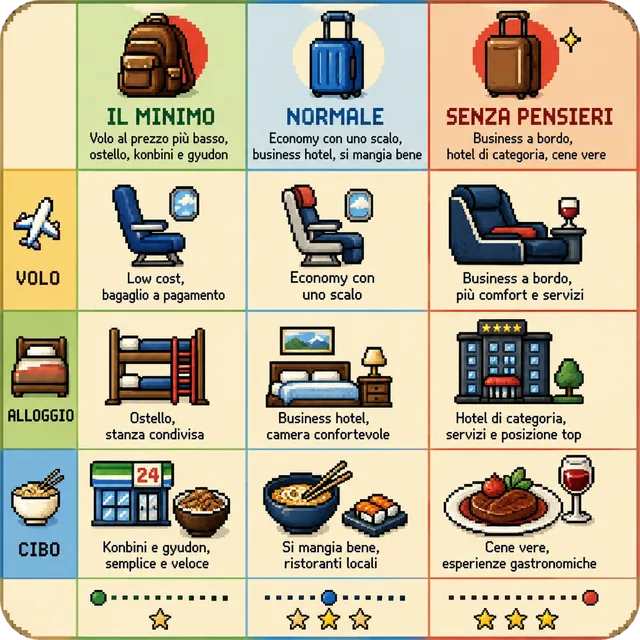

Prima versione: solo Tokyo. Volo e alloggio sono prezzi veri, letti da Google Flights e Google Hotels e rinfrescati regolarmente; anche il cambio euro/yen è quello della BCE del giorno. Anche i biglietti dei treni e i biglietti d'ingresso sono verificati alla fonte, uno per uno. Restano stime i voli dentro il Giappone, i due traghetti e quanto si spende per mangiare: in fondo al risultato è scritto voce per voce cosa è reale e cosa no. Le altre città arrivano dopo. Usalo per farti un'idea e per capire quali leve spostano il costo, non per prenotare. Nessun dato che inserisci esce da questa pagina: il calcolo avviene nel tuo browser.
Scegline almeno 2; il punto giusto sta fra 3 e 6. Sono queste a decidere l'itinerario, non le date.

Onsen e termebagni caldi, ryokan, relax2 domande in più al passo dopoNudi, divisi per sesso, e in molti posti con i tatuaggi non ti fanno entrare. Se hai tatuaggi dillo qui sotto: cambia dove ti mando.
Camminate e trekkingsentieri, salite, giornate a piedi3 domande in più al passo dopoDa un'ora di passeggiata piana alla notte in rifugio sul Fuji. Dirlo evita di ritrovarti una salita di sei ore in mezzo alle vacanze.
Notte e vita localevicoli, bar minuscoli, karaoke4 domande in più al passo dopoDi notte il Giappone cambia mestiere. I vicoli con i banconi da sei posti sono la cosa più difficile da trovare da soli.Serve almeno un paio di interessi: sono loro a costruire l'itinerario.

Per ogni cosa che hai scelto, dimmi che taglio darle. Ogni risposta riordina i luoghi: chi ha il dettaglio che hai chiesto passa davanti a chi ha solo l'argomento giusto. Puoi anche saltarle tutte.
Quali serie vuoi vedere dal vivo. Il pellegrinaggio (聖地巡礼, seichi junrei) cambia la rotta: alcuni luoghi sono lontani dai giri classici.
In Giappone la natura è quasi sempre composta: anche il bosco è progettato. Scegliere fra giardino e montagna cambia completamente le giornate.
Non il museo della tradizione: la tradizione ancora praticata da qualcuno che ci lavora.
In questa simulazione un bambino pesa il 65% di un adulto: volo quasi pieno, cibo e ingressi ridotti, letto condiviso. È l'assunzione del nostro modello, non una tariffa: quella vera dipende da età e compagnia.
La stagione è la leva più potente sul prezzo: fra la settimana più cara e la più economica ballano centinaia di euro a persona, a parità di tutto il resto.

Spunta quello che hai già visto: il motore lo toglie dall'itinerario e ti manda altrove.

Vedrai comunque tutti e tre i livelli affiancati: questo decide quale evidenziare. La zona dove dormire la scegliamo noi, prendendo la mediana delle zone di Tokyo per la fascia che hai scelto: nel risultato puoi spostarti sulla più economica o sulla più cara con un clic.